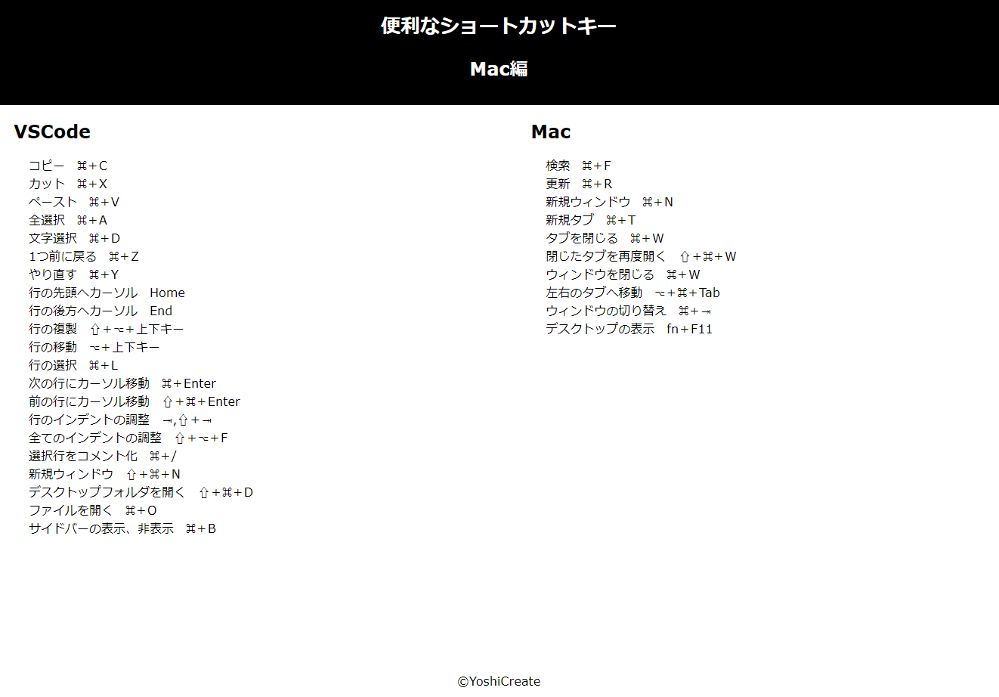
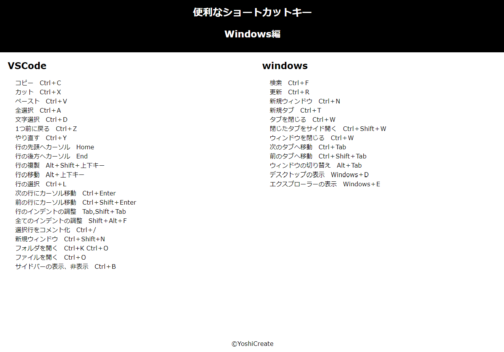
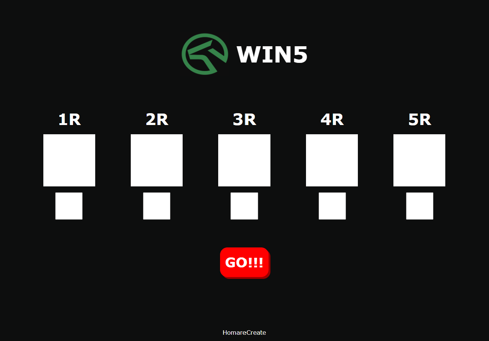

よく使うであろうショートカットキーを覚えきれていなかったので調べてリスト化をHTML.CSSで作成してみました。随時更新してます。
portfolio
実績紹介

よく使う便利なショートカットキー Mac

よく使う便利なショートカットキー Windows
Macのショートカットキーのリスト同様のリストです。こちらも随時更新中です。

WIN5の買い目ランダムツール
自分が競馬が好きなのでこんなの作ってみたいなと思いJavaScriptを使って作ってみました。